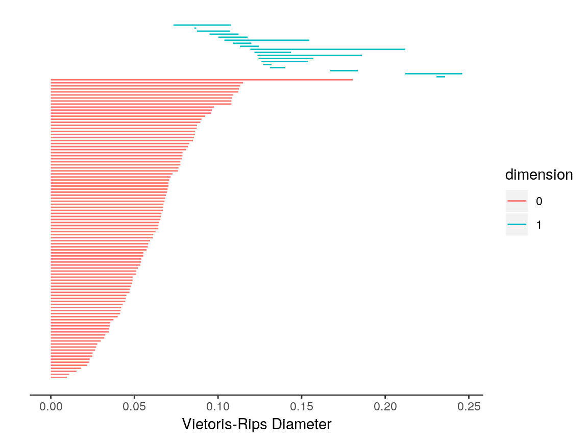
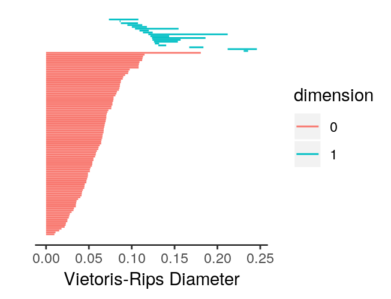

Data Input for TDAstats
Raoul R. Wadhwa, Drew F.K. Williamson, Andrew Dhawan, Jacob G. Scott
1 August 2018
Source:vignettes/inputformat.Rmd
inputformat.RmdThis short vignette aims to teach TDAstats users how to use the two different data input formats that are currently available for the calculate_homology method. We will be using the unif2d dataset included within TDAstats. Before we begin, we will load TDAstats and unif2d in our current working session.
Point cloud input
The unif2d dataset is already in point cloud format. Specifically, with 100 rows and 2 columns, unif2d contains the coordinates for 100 points in 2 dimensions. Thus, we can follow the steps outlined in the introductory vignette for TDAstats to calculate and visualize persistent homology for unif2d. Like the introductory vignette, we will stick to using topological barcodes for visualization; however, any occurrences of plot_barcode can be replaced with plot_persist for analogous visualization using persistence diagrams.
# calculate persistent homology
data.phom <- calculate_homology(unif2d)
# visualize persistent homology
plot_barcode(data.phom)
Note that calculate_homology has a format parameter that is "cloud" by default (short for point cloud), and thus does not need to be included above.
Distance matrix input
Sometimes, it is only possible (or simply more convenient) to retrieve a distance matrix for a set of points. A distance matrix that is to be used with calculate_homology must have the following properties:
- it must be a square matrix (\(n\) rows and \(n\) columns for some positive integer \(n\))
- it must only have numeric or integer values
- it must have no
NAorInfvalues - assuming the points are labeled \(1, 2, ..., n\), the number in the \(i\)th row and \(j\)th column of the matrix must equal the distance between point \(i\) and point \(j\)
Note that while providing a complete distance matrix is possible, since the distance between two points is commutative (distance between point \(i\) and point \(j\) always equals the distance between point \(j\) and point \(i\) in Euclidean geometry), only the lower triangular half of the distance matrix is required. Thus, the upper triangular half (including the main diagonal) is ignored by TDAstats.
In this example, we will use a complete distance matrix. To confirm that TDAstats works correctly, we will check whether the persistent homology it calculates for unif2d is equal to the persistent homology calculated for the distance matrix corresponding to unif2d. The first step is to calculate the distance matrix, which we do with the following functions. For the sake of clarity, we do this in a computationally inefficient manner that preserves code simplicity.
# calculates the distance between two points
calc.dist <- function(point1, point2) {
sqrt(sum((point1 - point2) ^ 2))
}
# calculates a distance matrix for a point cloud
calc.distmat <- function(point.cloud) {
# create empty matrix
ans.mat <- matrix(NA, nrow = nrow(point.cloud), ncol = nrow(point.cloud))
# populate matrix
for (i in 1:nrow(point.cloud)) {
for (j in 1:nrow(point.cloud)) {
ans.mat[i, j] <- calc.dist(point.cloud[i, ], point.cloud[j, ])
}
}
# return distance matrix
return(ans.mat)
}We can now use calc.distmat to provide a distance matrix to calculate_homology. Note the value of the format parameter in calculate_homology.
# calculate distance matrix for unif2d
dist.unif2d <- calc.distmat(unif2d)
# calculate persistent homology using distance matrix
dist.phom <- calculate_homology(dist.unif2d, format = "distmat")
# visualize persistent homology
plot_barcode(dist.phom)
For ease of comparison, we can plot the barcodes side-by-side to confirm they are identical.
# plot barcode for point cloud
plot_barcode(data.phom)
# plot barcode for distance matrix
plot_barcode(dist.phom)
We can also check whether the matrices returned by calculate_homology for data.phom and dist.phom are identical.
identical(data.phom, dist.phom)
> [1] TRUE